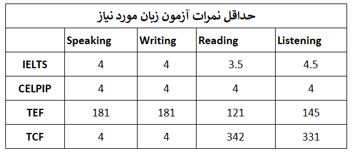
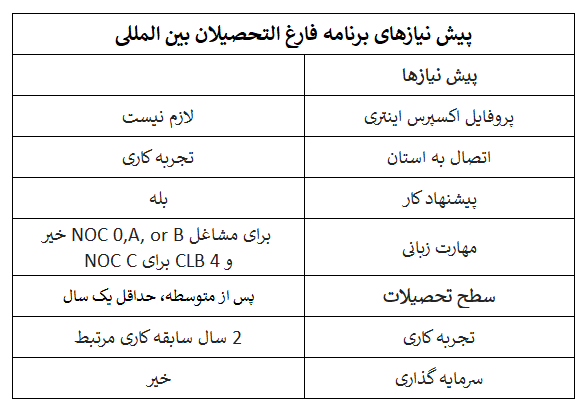

اسکیل ورکر بریتیش کلمبیا
برنامه مهاجرت استانی بریتیش کلمبیا
برنامه مهاجرت استانی کانادا یکی از مهمترین راههای رسیدن به اقامت دائم این کشور میباشد. هر استان در کانادا یک برنامه نامزدی دارد که طبق صلاحدید آن استان و در همکاری با دولت فدرال اقدام به انتخاب گزینههای مناسب برای اعطای اقامت دائم به افراد واجد شرایط میکند. برنامه مهاجرت استانی بریتیش کلمبیا یکی از بهترین، گستردهترین و راحتترین برنامه استانی در کاناداست که سالانه هزاران نفر را به عنوان نامزد دریافت اقامت دائم به دولت فدرال معرفی میکند. تنوع برنامه های مهاجرتی، آب و هوای مطبوع و سطح زندگی بالا، استان بریتیش کلمبیا را به یکی از محبوبترین مقاصد مهاجرین در دنیا تبدیل کرده است.
این برنامه شامل دو زیر برنامه اصلی میشود، که هر کدام از این برنامه های مهاجرتی جزئیات و موارد خاص خودشان را دارند:
- مهاجرت نیروهای ماهر Skills Immigration
- مهاجرت کارآفرینان Entrepreneur Immigration

- برنامه مهاجرت استانی بریتیش کلمبیا
- قسمت دوم
- قسمت سوم
برنامه مهاجرت استانی بریتیش کلمبیا
تنوع برنامههای مهاجرتی، آب و هوای مطبوع و سطح زندگی بالا، استان بریتیش کلمبیا را به یکی از محبوبترین مقاصد مهاجرین در دنیا تبدیل کرده است. برای آشنایی بیشتر با برنامه مهاجرت استانی بریتیش کلمبیا در این بخش ابتدا جزییات مهاجرت شاخه اسکیل ورکر را بررسی میکنیم.
اسکیل ورکر استان بریتیش کلمبیا به پنج برنامه اصلی تقسیم میشوند:
- فارغ التحصیلان بین المللی International Graduate
- فارغ التحصیلان بینالمللی تحصیلات تکمیلی International Post-Graduate
شرایط بسیاری از شاخههای مهاجرت مهارتها (Skills Immigration streams) بر اساس سیستم ملی طبقه بندی مشاغل (NOC) است.
استان بریتیش کلمبیا از نسخه NOC 2021 استفاده میکند.
برنامه مهاجرت اسکیل ورکر استان بریتیش کلمبیا
شرایط عمومی برنامه اسکیل ورکر بریتیش کلمبیا
افرادی که تمام الزامات برنامه مهاجرت استانی بریتیش کلمبیا را در زمان ثبت نام برآورده کنند، میتوانند برای نامزد شدن در این برنامه مهاجرتی درخواست دهند.
قصد زندگی در بریتیش کلمبیا:
متقاضی باید نشان دهد قصد زندگی، کار و استقرار اقتصادی در استان بریتیش کلمبیا را دارد.
داشتن منافع اقتصادی برای بریتیش کلمبیا:
استخدام فرد در استان بریتیش کلمبیا باید به منفعت اقتصادی این استان کمک کند. به عنوان مثال:
- حفظ یا ایجاد شغل برای کاناداییها
- انتقال دانش و مهارت به کاناداییها
- حمایت از توسعه محصولات جدید اختصاصی
- ایجاد نیروی کار برای یک پروژه بزرگ
وضعیت مهاجرتی فرد به کانادا
اگر متقاضی برنامه مهاجرت استانی بریتیش کلمبیا یکی از شرایط زیر را داشته باشد، موفق به شرکت در برنامه نامزدی استانی نخواهد شد:
- در صورتیکه فرد متقاضی ساکن کانادا است و زمان اقامت وی منقضی شده، باید مستنداتی ارائه و ثابت کند که برای تجدید اقامت در طی 90 روز قبل از درخواست اقدام نموده است؛
- بدون مجوز مشغول به کار در کانادا باشد؛
- درخواست پناهندگی وی حل نشده باشد یا
- تحت حکم حذف در داخل یا خارج از کانادا بوده، یا نیاز به مجوز بازگشت به کانادا داشته باشد.
مهارت زبان
یکی دیگر از شرایط برنامه مهاجرت استانی بریتیش کلمبیا حداقل میزان تسلط به زبان انگلیسی یا فرانسه است.
متقاضیان مشاغلی که تحت NOC TEER 2، 3، 4 یا 5 طبقه بندی شده اند، باید مهارت زبان انگلیسی یا فرانسوی را در سطح CLB 4 در هر یک از چهار مهارت: گوش دادن، صحبت کردن، خواندن و نوشتن داشته باشند.
اگر موقعیت شغلی تحت NOC TEER 0 یا 1 طبقه بندی شده باشد، نیاز به ارسال نتایج آزمون زبان معتبر در زمان ثبت نام نیست، مگر اینکه هدف فرد متقاضی دریافت امتیاز باشد. ارائه نتایج معتبر آزمون زبان ممکن است نمره ثبت نام فرد را افزایش دهد.
پس درصورتیکه فرد سطح زبان قابل قبولی دارد، میتواند یک کپی از نتایج آزمون زبان خود را در زمان درخواست به BC PNP ارائه دهد.
جدول زیر حداقل نمرات مورد نیاز برای آزمون های تعیین شده برای رسیدن به CLB 4 را نشان می دهد:

مدت اعتبار نمره زبان
نتایج آزمون به مدت دو سال از تاریخ صدور معتبر تلقی خواهد شد.
• برای دریافت امتیاز ثبت نام، نتایج آزمون باید در زمان ثبت نام معتبر باشد.
• اگر حداقل مهارت زبان برای درخواست فرد الزامی است، نتایج آزمون وی نیز باید در زمان درخواست معتبر باشد.
نامه جاب آفر امضا شده
از دیگر الزامات شرکت در برنامه مهاجرت استانی بریتیش کلمبیا داشتن یک درخواست شغل یا جاب آفر معتبر از یک کارفرمای واجد شرایط است.
نامه جاب آفر باید نشان دهد که موقعیت شغلی پیشنهادی:
- واجد شرایط شاخه مهاجرتی فرد متقاضی است؛
- برای استخدام تمام وقت است؛
- امضا و تاریخ آن توسط کارمند یا مالک شرکتی که مجاز به استخدام دراستان بریتیش کلمبیا است انجام شده باشد؛
- فرد متقاضی با امضا و درج تاریخ نامه جاب آفر تأیید کند که پیشنهاد کار را می پذیرد؛
- برای اشتغال به کار در استان بریتیش کلمبیا باشد؛
- شغل تاریخ پایان نداشته باشد.
BC PNP اشتغال تمام وقت را حداقل به طور متوسط 30 ساعت در هفته در تمام طول سال تعریف می کند.
نامشخص به این معنی است که پیشنهاد شغلی نباید موقت باشد یا تاریخ پایان مشخصی داشته باشد.

شرایط کارفرما در برنامه مهاجرت استانی بریتیش کلمبیا BC PNP
برای پشتیبانی ازبرنامه مهاجرت استانی بریتیش کلمبیا، کارفرما نیز باید شرایط خاصی را برآورده کند. ارائه اسناد تکمیلی و یک نامه امضا شده به دولت بریتیش کلمبیا از الزامات میباشد.
الزامات کارفرما
اکثر برنامههای مهاجرت استانی بریتیش کلمبیا به پیشنهاد شغلی نیاز دارند چرا که کارفرمایان از این طریق نیروی کار مورد نیاز خود را جذب و استخدام میکنند.
کارفرما باید در بریتیش کلمبیا مستقر بوده و متعهد به ارائه شغل تمام وقت به فرد متقاضی باشد. به این منظور کارفرمایانی که تمایل به پشتیبانی از برنامه مهاجرت PNP به کانادا دارند، باید شرایط و الزامات زیر را رعایت کنند:
ایجاد سود اقتصادی برای بریتیش کلمبیا
اشتغال فرد باید برای بریتیش کلمبیا سود اقتصادی داشته باشد. نمونه هایی از منافع اقتصادی عبارتند از:
- حفظ یا ایجاد شغل برای کاناداییها
- انتقال دانش و مهارت به کاناداییها
- حمایت از توسعه محصولات جدید اختصاصی
- ایجاد نیروی کار برای یک پروژه بزرگ
- در بریتیش کلمبیا مستقر باشد
کارفرما باید در بریتیش کلمبیا مستقر بوده و حضور فیزیکی داشته باشد. به این معنی که یک محل ثابت تجاری مانند یک دفتر، که در آن کارکنان میتوانند به طور فیزیکی و منظم به محل کار خود بروند در بریتیش کلمبیا دارد.
ساختار تجاری
شرکت، سازمان یا موسسه کارفرما باید :
- در بریتیش کلمبیا یا به صورت فرا استانی ( فدرال) ثبت شده باشد.
- به عنوان شرکت تضامنی عمومی، محدود یا با مسئولیت محدود در استان بریتیش کلمبیا ثبت شده باشد.
همچنین جاب آفرهایی که از بخش عمومی یا سازمان های غیرانتفاعی تاسیس شده در این استان، صادر می شوند مورد قبول برنامه مهاجرت استانی بریتیش کلمبیا (BC PNP) میباشند. لیست این سازمانها را در زیر میبینید:
- مقامات و آژانسهای بهداشتی استانی و منطقهای
- مؤسسات آموزش و پرورش دولتی پس از متوسطه
- مدارس دولتی
- موسسات غیرانتفاعی خصوصی پس از دوره متوسطه که توسط (The Private Career Training Institutions Agency) آژانس موسسات آموزش شغلی خصوصی BC معتبر شناخته شده یا در آن ثبت شدهاند.
- موسسات تحت حمایت دولت کانادا یا استان B.C. انجام تحقیقات در علوم طبیعی و کاربردی، مهندسی، کامپیوتر و سیستمهای اطلاعاتی یا علوم بهداشتی
- سازمانها و سازمان های دولتی استانی/فدرال/شهری
- سایر گروههای غیرانتفاعی که به عنوان سازمانهای خیریه تحت یک قانون فدرال یا استانی قابل اجرا ثبت شده و/یا ثبت شدهاند.
تکمیل و امضای فرم اظهارنامه کارفرما
کارفرما باید فرم اظهارنامه کارفرما را تکمیل و امضا کرده و تأیید کند که اطلاعات ارائه شده درست، کامل و صحیح است.
تمام بخشهای فرم اظهارنامه کارفرما باید تکمیل شده و پاسخها باید مستقیماً در جواب سؤالات هر بخش داده شوند، عبارتهای مبهم و غیر دقیقی مانند «قابل اجرا نیست» ناقص تلقی شده و ممکن است باعث رد درخواست متقاضی شود.
فرم جاب آفر باید توسط یک کارمند یا مالک شرکت که دارای اختیارات و رضایت شرکت برای پشتیبانی از برنامه مهاجرت استانی بریتیش کلمبیا (BC PNP)، است امضا شود و کلیه الزامات استخدام نیروی کار خارجی را برآورده کند. امضای این فرم بدون مجوز یا رضایت ممکن است منجر به رد درخواست یا در صورت لزوم، لغو نامزدی شود.
مجوز کسب و کار معتبر
کارفرما باید یک مجوز تجاری معتبر شهرداری یا، در صورت وجود، موافقت نامه مجوز شهرداری داشته باشد که به کارمندانش اجازه میدهد در یک مکان ثابت در B.C. مشغول به فعالیت تجاری شوند. اگر کارفرما از اخذ مجوز کسب و کار شهرداری معاف باشد، باید طبق خط مشی/مقررات شهرداری که معافیت را مجاز میسازد، مستندات لازم و در صورت لزوم، تأییدیهای از نهاد حاکم مربوطه، مانند یک مرجع بهداشت عمومی، که نشان می دهد کارفرمای شما برای فعالیت تایید شده است، را ارائه دهد.
اسناد پشتیبانی
نامه جاب آفر امضا شده
کارفرماباید یک نامه پیشنهاد شغلی یا جاب آفر با مشخصات زیر ارائه دهد:
- روی سربرگ رسمی شرکت نوشته شده باشد؛
- توسط کارمند یا مالک شرکتی که مجاز به استخدام کارمندان است امضا و تاریخ داشته باشد؛
- تایید نامه جاب آفر با امضا و تاریخ توسط فرد متقاضی انجام شده باشد؛
- دارای عنوان شغلی و شرح وظایف باشد؛
- نرخ پرداخت مشخص شده باشد؛
- دارای ساعات کار استاندارد باشد،
- موقعیت شغلی مشخصا تاریخ پایان نداشته و تمام وقت باشد (حداقل به طور متوسط 30 ساعت منظم هفته، در طول سال).
حداقل تعداد سال فعالیت در بریتیش کلمبیا
کارفرما باید حداقل به مدت یک سال (دو سال در صورت درخواست تحت دوره سطح ورودی و نیمه ماهر (ELSS) در B.C فعالیت کرده باشد.
ممکن است از کارفرما خواسته شود که اسناد اضافی را به عنوان مدرکی مبنی بر اینکه شرکت الزامات و شروط لازم را برآورده می کند، ارائه دهد.
حداقل تعداد کارمندان تمام وقت در بریتیش کلمبیا
اگر کارفرما در منطقه مترو ونکوور( Metro Vancouver Regional District) واقع شده باشد، باید حداقل پنج کارمند با تاریخ استخدام نامحدود و تمام وقت (یا معادل تمام وقت) داشته باشد که کار خود را از داخل بریتیش کلمبیا انجام میدهند.
اگر کارفرما در خارج از منطقه مترو ونکوور ( Metro Vancouver Regional District)واقع شده باشد، باید حداقل سه کارمند با تاریخ استخدام نامحدود و تمام وقت (یا معادل تمام وقت) داشته باشد که کار خود را از داخل بریتیش کلمبیا انجام میدهند.
معادل تمام وقت به چه معناست:
- کارمند تمام وقت به کارمندی اطلاق می شود که حداقل به طور متوسط 30 ساعت در هفته برای کارفرما کار میکند.
- کارمند پاره وقت به کارمندی اطلاق می شود که کمتر از میانگین 30 ساعت در هفته برای کارفرما کار میکند.
کارفرمایان ممکن است دو کارمند پاره وقت را به عنوان یک فرد معادل تمام وقت در نظر بگیرند، تا زمانی که مجموع ساعات کار حداقل به طور متوسط 30 ساعت در هفته باشد.
نکته: کارمندانی که کار خود را از خارج از بریتیش کلمبیا انجام میدهند، شامل کارکنان تمام وقت نخواهند بود.
فقط افرادی که در لیست حقوق و دستمزد شرکت هستند، کارمند شرکت محسوب میشوند. ممکن است از کارفرما خواسته شود که مدارک حمایتی دیگری مانند T4 یا خلاصه حقوق پرداخت شده، را به عنوان مستندات، ارائه دهد.
پیروی از قوانین و مقررات
ممکن است درخواست متقاضی به دلایل زیر رد شود:
- طی دو سال گذشته، کارفرمای حامی متقاضی، یا مدیر/مالک کار، توسط دولت یا نهاد نظارتی جریمه شده باشد.
- در طی پنج سال گذشته، کارفرمای حامی متقاضی، یا مدیر/مالک کار، به دلیل عدم رعایت قوانین یا مقررات مربوط به مهاجرت، توسط دولت یا نهاد نظارتی جریمه شده باشد.
- کارفرمای حامی متقاضی، یا مدیر/صاحب کار، توسط دولت یا نهاد نظارتی تحت بررسی و نظارت باشد.
- کارفرمای حامی متقاضی، یا مدیر/صاحب کار، به یک جرم جنایی مرتبط با مهاجرت یا فعالیت کسب و کار متهم شده باشد.
اگر BC PNP تشخیص دهد که کارفرمای حامی متقاضی، یا مدیر/صاحب کار، فعالیت مطابق با قوانین یا مقررات شهرداری، استانی یا فدرال ندارد، ممکن است این اطلاعات را با بخشی که مسئول اجرای چنین قانون یا مقرراتی در دولت یا نهاد نظارتی مربوطه است به اشتراک بگذارد. این امر ممکن است به رد شدن درخواست متقاضی منجر شود.
تلاش برای استخدام فرد بومی
برنامه مهاجرت استانی بریتیش کلمبیا (BC PNP) نباید بر فرصت های شغلی یا توسعه آنها برای شهروندان کانادایی و/یا ساکنان دائم بریتیش کلمبیا تأثیر منفی بگذارد. به همین دلیل، کارفرما باید تلاش های واقعی و صادقانه ای برای استخدام از بازار کار محلی انجام داده باشد.
ارائه مدارک و شواهدی که نشان دهنده موارد زیر باشد:
- تلاش های خاصی برای شناسایی یک کانادایی یا مقیم دائم برای این موقعیت انجام داده است
- روش ها و مدت زمان استخدام که با استانداردها و رویه های صنعت سازگار است رعایت شده است
- بررسی دقیق هنگام تأیید صلاحیت همه نامزدهای بالقوه صورت گرفته باشد.
صلاحیت های ذکر شده در آگهی های استخدام:
- معقول باشد؛
- با شغل سازگار باشد، یعنی مخاطبی را هدف قرار می دهد که دارای تحصیلات، تجربه حرفه ای یا سطح مهارت مناسب برای شغل مورد نظر است؛
- اولویت هایی را که توسط NOC، WorkBC یا سایر استانداردهای صنعتی پشتیبانی نمیشوند، عنوان نشده باشند؛
- ترجیحاتی مانند توانایی صحبت کردن به زبانی غیر از زبان های رسمی انگلیسی یا فرانسوی نداشته باشد مگر اینکه زبان به طور مستقیم با وظایف شغلی مرتبط باشد؛
- متقاضی نیازی به داشتن یک شبکه ارتباطی خارجی یا تجربه کاری خارجی نداشته باشد؛
- و به طور خاص به متقاضی خاصی ارائه نمی شود.

شاخه اسکیل ورکر کانادا | نیروی کار ماهر
شاخه اسکیل ورکر کانادا یا نیروی کار ماهر، برنامه های مختلفی دارد که برای هدف قرار دادن نیروهایی با مهارت ها، تجربه و صلاحیت های مورد نیاز استان بریتیش کلمبیا طراحی شده است. در این برنامه ها کارفرمایان به دنبال افرادی با مهارتها و شایستگیهای خاص و متعهد به زندگی، کار و استقرار اقتصادی در بریتیش کلمبیا هستند.
از داوطلبانی که با موفقیت از طریق برنامه اسکیل ورکر بریتیش کلمبیا نامزد شدهاند، میتوانند درخواست رسمی خود برای اقامت دائم کانادا را ارسال کنند. نامزدها برای واجد شرایط بودن برای این جریان نیازی به نمایه اکسپرس اینتری ندارند. با این حال، کاندیداهایی که واجد شرایط بوده و دارای نمایه اکسپرس انتری فعال هستند، ممکن است بتوانند از طریق اکسپرس اینتری برای پردازش سریع به جریان درخواست دهند.
جدول زیر پیش نیازهای لازم برای متقاضیان مهاجرت کانادا از طریق برنامه مهاجرت استانی بریتیش کلمبیا شاخه اسکیل ورکر را نشان می دهد:
چه کسانی میتوانند از طریق این برنامه اقدام کنند؟
اسکیل ورکر کانادا در برنامه مهاجرت استانی بریتیش کلمبیا مناسب افراد با تجربه و ماهر در شغل مدیریت حرفه ای، مشاغل فنی، تجاری یا سایر مشاغل است.
متقاضی باید شرایط عمومی برنامه اسکیل ورکر برییتش کلمبیا را داشته باشد.
صلاحیتها
متقاضی شاخه اسکیل ورکر باید واجد شرایط کاری باشد که به وی پیشنهاد شده است.
برنامه مهاجرت استانی بریتیش کلمبیا برای تعیین حداقل صلاحیتهای یک شغل به طبقهبندی ملی مشاغل NOC)، WorkBC) استانداردهای صنعتی، و/یا آژانسها یا انجمنهای نظارتی استانی/فدرال مراجعه میکند.
اگر موقعیت پیشنهادی نیاز به گواهینامه، مجوز یا ثبت نام اجباری دارد، متقاضی باید در زمان درخواست مدارکی را به برنامه مهاجرت استانی بریتیش کلمبیا BC PNP ارائه دهد که واجد شرایط بودن وی را اثبات کند.
برنامه مهاجرت استانی بریتیش کلمبیا (BC PNP) به صلاحدید خود، ممکن است اسناد اضافی مانند ارزیابی اعتبار آموزشی را در طول ارزیابی درخواست برای تأیید تحصیلات یا مدارک متقاضی درخواست کند.
شرایط صلاحیت برای بخش حمل و نقل
برای مشاغل پیشنهادی به عنوان راننده در بخش حمل و نقل (مانند NOC 73300 رانندگان کامیون حمل و نقل یا رانندگان اتوبوس NOC 73301، اپراتورهای مترو و سایر اپراتورهای حمل و نقل) متقاضی باید گواهینامه رانندگی معتبر کانادایی مناسب در زمان ارسال درخواست برای پیشنهاد شغلی داشته باشد.
شرایط صلاحیت برای دستیاران مراقبت های بهداشتی / دستیاران و دستیاران دندانپزشکی
فقط دستیاران مراقبت های بهداشتی واجد شرایط نامزدی برنامه مهاجرت استانی بریتیش کلمبیا (BC PNP) تحت NOC 33102 هستند. اگر متقاضی شغلی به عنوان دستیار مراقبتهای بهداشتی باشید، باید در زمان ثبت نام برای BC PNP در Care Aide & Community Health Worker ثبت نام کرده باشید.
برای مشاغل پیشنهادی به عنوان دستیار دندانپزشکی (تحت استاندارد NOC 33100)، متقاضی باید مجوز کار در آن شغل را در بریتیش کلمبیا در زمانی که برای برنامه اسکیل ورکر درخواست میکند داشته باشد.
دستمزد
دستمزد پیشنهادی باید شرایط زیر را داشته باشد:
- به نرخ بازار برای شغل مربوطه
- قابل مقایسه با دستمزدهای پرداختی به کانادایی ها و مقیمان دائمی با تحصیلات، آموزش و تجربه مشابه ؛ و
- مطابق با ساختار غرامت دستمزد کارفرما
برنامه مهاجرت استانی بریتیش کلمبیا (BC PNP) در شاخه اسکیل ورکر، پاداش ها، کمیسیون ها، توزیع های مشارکت در سود، انعام / کمک هزینه، دستمزد اضافه کاری، کمک هزینه مسکن، اتاق و غذا، یا موارد مشابه دیگرپرداخت هایی که بخشی از دستمزد باشد را در نظر نخواهد گرفت.
حداقل درآمد
متقاضی باید حداقل شرایط درآمد خانواده را مطابق با شرایط زیر داشته باشد:
- دستمزد سالانه در بریتیش کلمبیا
- منطقه سکونت در بریتیش کلمبیا و
- تعداد افراد تحت تکفل
مجموع درآمد خانواده عبارت است از:
- دستمزد سالانه ناخالص منظم فرد از کارفرمایی که در برنامه مهاجرت استانی بریتیش کلمبیا از متقاضی حمایت میکند و
- در صورت لزوم، دستمزد ناخالص عادی سالانه همسر یا شریک زندگی مشترک فرد متقاضی در بریتیش کلمبیا
برای در نظر گرفتن دستمزد همسر یا شریک زندگی مشترک به عنوان بخشی از درآمد خانواده، همسر یا شریک زندگی مشترک باید دارای مجوز کار معتبر یا مجوز اشتغال معتبر بوده و باید در حال حاضر در B.C مشغول به کار باشد.
جدول زیر حداقل درآمد مورد نیاز بر اساس اندازه خانواده و منطقه سکونت در بریتیش کلمبیا را نشان میدهد.
همسر یا شریک زندگی مشترک و فرزندان تحت تکفل متقاضی، برای زندگی در بریتیش کلمبیا خواه همراه فرد باشند یا نباشند، در شمار خانواده وی قرار میگیرند.در صورت جدایی یا طلاق باید یک اعلامیه قانونی امضا شده مبنی بر جدایی رسمی، یا گواهی طلاق یا یک سند رسمی مشابه که نشان میدهد رابطه به پایان رسیده است، ارائه دهد.
شرایط استخدام
شرایط استخدامی برای برنامه مهاجرت استانی بریتیش کلمبیا (BC PNP):
- متقاضی برای انجام کار برای یک سازمان دستمزد دریافت میکند.
- متقاضی سهام مالکیت 10٪ یا بیشتر را در اختیار ندارد.
- سازمانی که دستمزد را پرداخت و کار را هدایت و نظارت میکند، حضور عملیاتی قابل توجهی در بریتیش کلمبیا دارد.
- فعالیت کاری متقاضی منفعت اقتصادی مستقیم برای بریتیش کلمبیا داشته باشد.
اگر فرد متقاضی تحت نظارت مستقیم و منظم سازمانی که در بریتیش کلمبیا تأسیس نشده است، کار کند درخواست وی تایید نخواهد شد.
فرصت های شغلی برای بریتیش کلمبیاییها
استخدام فرد مهاجر نباید بر حل و فصل اختلافات کاری یا استخدام هر کسی که در چنین اختلافی دخیل است تأثیر منفی بگذارد. اشتغال فرد همچنین نباید تأثیر نامطلوبی بر آموزش یا فرصتهای شغلی برای شهروندان کانادایی یا مقیم دائم ساکن در بریتیش کلمبیا داشته باشد.

اسکیل ورکر بریتیش کلمبیا | نیروی کار حوزه سلامت
مقوله شاخه نیروهای متخصص در حوزه سلامت بریتیش کلمبیا یکی از چندین برنامه های مهاجرتی است که در برنامه نامزد استانی بریتیش کلمبیا (BC PNP) وجود دارد. اداره بهداشت بریتیش کلمبیا، نامزدی مهاجرانی را در اولویت قرار میدهد که از یک مرجع بهداشت عمومی در بریتیش کلمبیا پیشنهاد کار دارند و میتوانند در بخش کار مراقبتهای بهداشتی مشارکت پایدار داشته باشند.
افرادی که یپشنهاد شغلی تمام وقت در هر شغلی از یک مرجع بهداشت عمومی در بریتیش کلمبیا داشته باشند، میتوانند از این طریق برای درخواست اقامت کانادا اقدام کنند. متقاضیانی که پزشک، پرستار یا ماما هستند، مستقیماً توسط مرجع بهداشت عمومی B.C استخدام نمیشوند. این افراد میتوانند واجد شرایط درخواست مهاجرت تحت شاخه حوزه سلامت و بهداشت باشند.
جدول زیر پیش نیازهای لازم برای متقاضیان مهاجرت کانادا از طریق برنامه مهاجرت استانی بریتیش کلمبیا شاخه نیروهای متخصص در حوزه سلامت را نشان میدهد:
چه کسانی میتوانند از طریق این برنامه اقدام کنند؟
a) متقاضی باید شرایط عمومی برنامه اسکیل ورکر برییتش کلمبیا را داشته باشد.
b) برای اینکه فرد واجد شرایط این شاخه مهاجرتی محسوب شود باید یک پیشنهاد شغل تمام وقت بدون تاریخ اتمام کار از یک مرجع بهداشت عمومی در B.C دریافت کرده و یا پزشک، پرستار یا ماما باشد.
خواست و پیشنهاد موقعیت شغلی تمام وقت، میتواند از یکی از سازمان های بهداشت عمومی بریتیش کلمبیا که در زیر فهرست شده اند، برای متقاضی ارسال شود:
- Provincial Health Services Authority
- First Nations Health Authority
- Fraser Health
- Interior Health
- Island Health
- Northern Health
- Vancouver Coastal Health
- Providence Health Care
پیشنهاد شغلی فرد میتواند در هر شغلی، در هر رده NOC TEER، مرجع بهداشت عمومی B.C باشد. این پیشنهاد شغلی باید به صورت رسمی، روی سربرگ سازمان مربوطه و امضا شده باشد.
پزشکان، پرستاران و ماماها:
متقاضیانی که پزشک، پرستار یا ماما هستند و در بریتیش کلمبیا مشغول بکار میباشند و یا به زودی مشغول به کار خواهند شد، با داشتن یک توصیه نامه و مدارک حمایتی از یک سازمان بهداشت عمومی یا دوره تمرین مامایی در بریتیش کلمبیا، در صورتی واجد شرایط خواهند بود که الزامات و صلاحیت های تایید شده زیر را داشته باشند:
- مهارت و صلاحیت کافی از لحاظ شغلی
- مشغول به کار به عنوان پزشک، پرستار یا ماما در B.C باشند یا به زودی مشغول شوند.
- محل کار مشخص
- حمایت اداره بهداشت یا گروه مامایی از فرد برای برنامه مهاجرت استانی بریتیش کلمبیا BC PNP
شرایط کارفرما
برای اطلاع از شرایط کارفرما به بخش شرایط کارفرما در برنامه مهاجرت استانی بریتیش کلمبیا BC PNP مراجعه کنید.

اسکیل ورکر بریتیش کلمبیا | فارغ التحصیلان بین المللی
جریان فارغ التحصیلان بین المللی بریتیش کلمبیا یکی از چندین شاخههای مهاجرتی است که در برنامه نامزد استانی بریتیش کلمبیا (BC PNP) وجود دارد. این برنامه، نامزدی مهاجرانی را در اولویت قرار میدهد که پیشنهاد شغلی برای یک شغل مهارتی دارند و تحصیلات پس از متوسطه را در کانادا به پایان رساندهاند.
همچنین دانشجویان بینالمللی که در سه سال گذشته از دانشگاه یا کالج در کانادا فارغالتحصیل شدهاند، ممکن است واجد شرایط نامزدی شاخه فارغالتحصیلان بینالمللی برنامه مهاجرت استانی بریتیش کلمبیا باشند.
جدول زیر پیش نیازهای لازم برای متقاضیان مهاجرت کانادا از طریق برنامه مهاجرت استانی بریتیش کلمبیا شاخه فارغ التحصیلان بین المللی را نشان می دهد.

چه کسانی میتوانند از طریق این برنامه اقدام کنند؟
a) متقاضی باید شرایط عمومی برنامه اسکیل ورکر برییتش کلمبیا را داشته باشد.
b) متقاضی باید مدرک دیپلم یا گواهی تحصیل پس از متوسطه را از یک موسسه واجد شرایط در کانادا گرفته باشد.
ارائه یکی از مدراک زیر جهت تایید واجد شرایط بودن فرد متقاضی برنامه مهاجرت استانی بریتیش کلمبیا (BC PNP) در شاخه فارغ التحصیلان بین المللی الزامی است :
- یک کپی از ریز نمرات رسمی که تاریخ تکمیل مدرک، دیپلم یا برنامه گواهی را نشان میدهد، یا
- یک کپی از مدرک، دیپلم، یا گواهی تحصیلی
در برخی موارد، ممکن است برنامه مهاجرت استانی بریتیش کلمبیا BC PNP هم یک کپی از ریز نمرات و هم یک کپی از مدرک، دیپلم یا گواهی متقاضی را جهت شرایط فرد، درخواست کند.
آموزش از راه دور و محل آموزش
متقاضی باید 50 درصد یا بیشتر از تحصیلات خود را از داخل کانادا تکمیل کرده باشد.
متقاضیانی که تحصیلات خود را طی یک برنامه آموزش از راه دور از خارج یا داخل کانادا انجام داده باشند، واجد شرایط محسوب نمی شوند. با این حال، به دلیل تأثیر کووید-19، دوره های آنلاین تکمیل شده از ژانویه 2020 تا ژوئن 2023 به عنوان بخشی از یک برنامه تحصیلی واجد شرایط BC PNP در حین اقامت در کانادا واجد شرایط شناخته می شوند.
نکته: مدارک تحصیلی اعطا شده توسط پردیس های موسسات کانادایی واقع در خارج از کانادا واجد شرایط اقدام برای مهاجرت به بریتیش کلمبیا از طریق این روش نیستند.
دیپلم و گواهینامه ها
مدرک یا دیپلم باید از یک موسسه دولتی تحصیلات پس از متوسطه در کانادا باشد. مدارک تحصیلی و گواهینامه های موسسات خصوصی واجد شرایط نیستند. برنامه های آموزش زبان (به عنوان مثال انگلیسی به عنوان زبان دوم (ESL) یا انگلیسی به عنوان زبان خارجی واجد شرایط نیستند.)
طول دوره تحصیل متقاضی این برنامه باید حداقل، 8 ماه (دو ترم) یا معادل تمام وقت باشد. شرایط کار آموزی (Co-op) و دوره های عملی در طول دوره 8 ماهه تحصیل محاسبه نمی شوند. ممکن است متقاضی نیاز به ارائه نامه ای از موسسه آموزشی مربوطه مبنی بر تأیید گذراندن حداقل 8 ماه تحصیل داشته باشد.
برای اطلاع از لیست موسسات تحصیلی رده متوسطه که مورد تایید وزارت آموزش و پرورش مهارت های استان بریتیش کلمیبا است میتوانید به وب سایت رسمی Ministry of Advanced Education, Skills & Training مراجعه کنید.
c) متقاضی باید ظرف سه سال پس از فارغ التحصیلی درخواست خود را برای برنامه مهاجرت استانی بریتیش کلمبیا ارسال کند.
متقاضی باید ظرف سه سال از تاریخ فارغ التحصیلی درخواست خود را به BC PNP ارسال کند، مشروط بر اینکه تاریخ ذکر شده در مدرک وی کمتر از 12 ماه پس از اتمام برنامه تحصیلی باشد.
دانشجوی متقاضی می تواند به محض تکمیل برنامه تحصیلی خود در این جریان یا در مورد دانشجویان دکترا به محض پذیرش در کاندیداتوری برای این جریان اقدام کنند.
d) فرد متقاضی باید پیشنهاد شغلی که در رده NOC TEER 1، 2 یا 3 طبقه بندی می شود، داشته باشد.
شرایط کارفرما
برای اطلاع از شرایط کارفرما به بخش شرایط کارفرما در برنامه مهاجرت استانی بریتیش کلمبیا BC PNP مراجعه کنید.

اسکیل ورکر بریتیش کلمبیا | فارغ التحصیلان تحصیلات تکمیلی
شاخه تحصیلات تکمیلی بین المللی بریتیش کلمبیا یکی از چندین شاخه های مهاجرتی است که در برنامه نامزدی استانی بریتیش کلمبیا (BC PNP) وجود دارد. این برنامه نامزدی مهاجرانی را که اخیراً تحصیلات تکمیلی را از یک موسسه واجد شرایط بریتیش کلمبیا به پایان رسانده اند، در اولویت قرار میدهد.
مشمولان برنامه فارغ التحصیلان بینالمللی تحصیلات تکمیلی International Post-Graduate، بدون نیاز به پیشنهاد شغلی میتوانند برای دریافت نامزدی استانی و اقامت دائم کانادا اقدام کنند.
همهی برنامههای زیرمجموعه مهاجرت اسکیل ورکر در برنامه مهاجرت استانی بریتیش کلمبیا، نیازمند پیشنهاد شغلی (Job Offer) از طرف یک کارفرمای داخل استان میباشند، به استثنای برنامه فارغ التحصیلان بینالمللی تحصیلات تکمیلی International Post-Graduate، که مشمولان این برنامه بدون نیاز به پیشنهاد شغلی میتوانند برای دریافت نامزدی استانی و اقامت دائم کانادا اقدام کنند.
جدول زیر پیش نیازهای لازم برای متقاضیان مهاجرت کانادا از طریق برنامه مهاجرت استانی بریتیش کلمبیا شاخه فارغ التحصیلان بین المللی تحصیلات تکمیلی را نشان میدهد:
چه کسانی میتوانند از طریق این برنامه اقدام کنند؟
a) متقاضی باید شرایط عمومی برنامه اسکیل ورکر برییتش کلمبیا را داشته باشد.
b) افرادی که شرایط تحصیلات تکمیلی پس از متوسطه را از یک برنامه تحصیلی واجد شرایط در یک موسسه در بریتیش کلمبیا به دست آورده باشند میتوانند از طریق این برنامه اقدام کنند.
برنامه های سطح کارشناسی ارشد
اگر فرد متقاضی مدرک کارشناسی ارشد را در یکی از برنامه های تحصیلی زیر در رشته های علوم طبیعی، کاربردی یا بهداشتی بریتیش کلمبیا به پایان رسانده باشد، می تواند واجد شرایط درخواست از طریق این شاخه برای مهاجرت به بریتیش کلمبیا باشد:
- کشاورزی، عملیات کشاورزی و علوم مرتبط
- علوم زیستی و زیست پزشکی
- علوم کامپیوتر و اطلاعات و خدمات پشتیبانی
- مهندسی
- فن آوری مهندسی و رشته های مرتبط با مهندسی
- حرفه های بهداشتی و برنامه های مرتبط
- ریاضیات و آمار
- حفاظت از منابع طبیعی
- علوم فیزیکی
برنامه های سطح دکترا
اگر فرد متقاضی دانشجوی دکترا (در هر رشته تحصیلی) یا دارای مدرک دکترا (در هر رشته تحصیلی) از یک دانشگاه عمومی یا موسسه فوق متوسطه در بریتیش کلمبیا باشد، ممکن است واجد شرایط مهاجرت به بریتیش کلمبیا از طریق شاخه فارغ التحصیلان بین المللی باشد. در صورتیکه الزامات زیر را برآورده کند:
- برای کاندیداتوری پذیرفته شده باشد.
- یک کپی از رونوشتهای رسمی خود را که تاریخ پذیرش وی برای کاندیداتوری را نشان میدهد، یا نامه پذیرش از دانشگاه عمومی بریتیش کلمبیا که تایید میکند فرد در کاندیداتوری پذیرفته شده است، ارائه دهد.
نکته: دکترای حقوقی ( Juris Doctor (J.D یا دکترای عمومی( Doctor of Medicine (M.D، واجد شرایط اقدام از طریق این برنامه نیستند.
کپی مدرک/ ریز نمرات
اگر فرد تحصیلات خود را به پایان رسانده باشد ، باید یکی از مدارک زیر را ارسال کند:
- یک کپی از مدرک
- نامه تاییدیه از دانشگاه محل تحصیل در بریتیش کلمبیا مبنی بر تکمیل دوره تحصیلی
- یک کپی از ریز نمرات رسمی که تاریخ تکمیل برنامه تحصیلی را نشان میدهد
آموزش از راه دور و محل آموزش
متقاضی باید 50 درصد یا بیشتر از تحصیلات خود را از داخل کانادا تکمیل کرده باشد.
متقاضیان مهاجرت به بریتیش کلمبیا که تحصیلات خود را طی یک برنامه آموزش از راه دور از خارج یا داخل کانادا انجام داده باشند، واجد شرایط محسوب نمیشوند. با این حال، به دلیل تأثیر کووید-19، دورههای آنلاین تکمیل شده از ژانویه 2020 تا ژوئن 2023 به عنوان بخشی از یک برنامه تحصیلی واجد شرایط BC PNP در حین اقامت در کانادا واجد شرایط شناخته میشوند.
نکته: مدارک تحصیلی اعطا شده توسط پردیسهای موسسات کانادایی واقع در خارج از کانادا واجد شرایط نیستند.
c) متقاضی باید ظرف سه سال پس از فارغ التحصیلی درخواست خود را برای برنامه مهاجرت استانی بریتیش کلمبیا BC PNP ارسال کند. مشروط بر اینکه تاریخ ذکر شده در مدرک وی کمتر از 12 ماه پس از اتمام برنامه تحصیلی باشد.
دانشجوی متقاضی میتواند به محض تکمیل برنامه تحصیلی خود در این شاخه یا در مورد دانشجویان دکترا به محض پذیرش در کاندیداتوری برای این برنامه اقدام کنند.
d) اثبات توانایی کار و قصد ادامه زندگی در بریتیش کلمبیا از لحاظ اقتصادی
شرایط زیر برای اثبات قصد و توانایی مالی فرد متقاضی مورد بررسی قرار میگیرد:
- طول مدت اقامت قبلی و/یا فعلی فرد در استان بریتیش کلمبیا؛
- ارتباطات وی در استان از طریق کار، تحصیل یا خانواده؛
- شرح هر اقدامی که برای اقامت دائم در بریتیش کلمبیا انجام داده است، مانند شغل یا مکانی برای زندگی؛
- اشتغال فعلی در استان بریتیش کلمبیا؛
- جزئیات جستجوی استخدام (کارفرمایان احتمالی، برنامه های کاربردی، تلاش های شبکه، توسعه تجارت و غیره)؛
- مشارکت در امور اجتماعی؛
- توانایی حمایت مالی از خود و وابستگان خود (در صورت وجود) در و
- برنامه وی برای به دست آوردن یا حفظ مجوز قانونی برای کار در بریتیش کلمبیا
از الزامات برنامه مهاجرت استانی بریتیش کلمبیا BC PNP این است که فرد متقاضی بعد از دریافت نامزدی این برنامه دراین استان اقامت کند. چنانچه متقاضی در زمان اقدام و ارسال درخواست در بریتیش کلمبیا زندگی نمیکند، باید مدارک و شواهدی مبنی بر برنامه ریزی برای کار و سکونت در بریتیش کلمبیا مانند تاریخ ورود ارائه دهد،در صورتیکه موفق به اثبات قصد خود برای سکونت نشود ممکن است به ردشدن درخواست وی منجر شود.
برنامه مهاجرت استانی بریتیش کلمبیا (BC PNP) در شرایط خاص/ اجباری ممکن است در مورد سیاستهای این بخش استثائاتی قائل شود.
e) سایر شرایط در صورت استفاده از برنامه اکسپرس انتری بریتیش کلمبیا
فرد متقاضی برای استفاده از گزینه اکسپرس انتری بریتیش کلمبیا، باید یک شماره نمایه IRCC Express Entry معتبر و یک کد اعتبارسنجی جستجوی کار که نشان دهنده واجد شرایط بودن متقاضی برای یکی از برنامه های مهاجرت اقتصادی فدرال که مشمول سیستم اکسپرس انتری IRCC است، دارد.

اسکیل ورکر بریتیش کلمبیا | نیروی کار مبتدی و نیمه ماهر
برنامه نیروی کار نیمه ماهر و ورودی بریتیش کلمبیا (ELSS) یکی از چندین برنامه مهاجرتی است که در برنامه نامزدی استانی بریتیش کلمبیا (BC PNP) وجود دارد. شاخه سطح ورودی و نیمه ماهر بریتیش کلمبیا نامزدی مهاجرانی را که دارای تجربه کاری نیمه ماهر در استان هستند و یک پیشنهاد کار از سوی یک کارفرمای BC در اولویت قرار میدهد.
اگر فردی در حال حاضر در بخش گردشگری / مهمان نوازی یا بخش های پروسس مواد غذایی استان بریتیش کلمبیا مشغول به کار باشد، یا متقاضیانی که در حال حاضر در منطقه توسعه شمال شرق استان بریتیش کلمبیا در هر شغل NOC TEER 4 یا 5، به غیر از مشاغل مراقبت در منزل (NOC 44100) مشغول به کار هستند، در صورت واجد شرایط بودن، میتوانند از این طریق برای درخواست برنامه مهاجرت استانی بریتیش کلمبیا (BC PNP) اقدام کنند.
لطفاً توجه داشته باشید که گزینه اکسپرس انتری بریتیش کلمبیا (EEBC) برای شاخه ELSS در دسترس نیست.
جدول زیر پیش نیازهای لازم برای متقاضیان مهاجرت کانادا از طریق برنامه مهاجرت استانی بریتیش کلمبیا شاخه نیروی کار نیمه ماهر را نشان میدهد:
چه کسانی میتوانند از طریق این برنامه اقدام کنند؟
a) متقاضی باید شرایط عمومی برنامه اسکیل ورکر برییتش کلمبیا را داشته باشد.
b) باید یک جاب آفر معتبر برای یک شغل تمام وقت در یکی از مشاغل واجد شرایط شاخه نیروی کار مبتدی و نیمه ماهر( ELSS) داشته باشد.
مشاغل واجد شرایط شاخه نیروی کار مبتدی و نیمه ماهر( ELSS) به دو بخش کلیدی تقسیم میشوند:
- گردشگری و هتلداری
- فرآوری مواد غذایی
افرادی که تحت برنامه Live-In Caregiver دولت فدرال مشغول به کار هستند، واجد شرایط برنامه مهاجرت استانی بریتیش کلمبیا (BC PNP)نمی باشند، زیرا این برنامه از قبل راهی برای اقامت دائم شرکت کنندگان فراهم کرده است.
کارفرما باید یک پیشنهاد شغلی امضا شده در سربرگ رسمی شرکت به فرد متقاضی رائه دهد.
برای اطلاع از شرایط کارفرما به بخش شرایط کارفرما در برنامه مهاجرت استانی بریتیش کلمبیا BC PNP مراجعه کنید.
c) قبل از ثبت نام در برنامه مهاجرت استانی بریتیش کلمبیا (BC PNP) ، فرد متقاضی باید به طور تمام وقت، در تمام طول سال، برای حداقل نه (9) ماه متوالی، در هر شغل واجد شرایط شاخه نیروی کار مبتدی و نیمه ماهر( ELSS) در بریتیش کلمبیا کار کرده و کارفرما نیز از شرایط برنامه مهاجرت استانی پیروی کرده باشد.
در برخی موارد، تغییر شغل فرد از یک شغل واجد شرایط ELSS به شغل دیگری که واجد شرایط ELSS است، البته تحت اشتغال برای یک کارفرما در طول دوره نه ماهه استخدام، توسط برنامه مهاجرت استانی بریتیش کلمبیا (BC PNP) پذیرفته میشود.
مرخصی سالانه در دوره 9 ماهه متوالی اشتغال محاسبه می شود. به عنوان مثال، اگر نه ماه برای یک کارفرما مشغول به کار بودهاید، و در طول آن دوره 9 ماهه به مرخصی دو هفتهای رفتهاید، باز هم شرایط استخدامی 9 ماهه را دارید.
مرخصی پزشکی / والدین / زایمان / مرخصی طولانی مدت و وقفه های شغلی قابل قبول هستند، اما به انباشت 9 ماه تجربه کاری کمکی نمیکنند. در شاخه ELSS فرد باید 9 ماه کامل تجربه کاری داشته باشد و باید در زمان ثبت نام و درخواست برای برنامه مهاجرت استانی بریتیش کلمبیا (BC PNP) به صورت تمام وقت مشغول به کار باشد.
d) فرد باید بتواند سابقه ای از توان مالی و داشتن حداقل درآمد مورد نیاز را نشان دهد.
متقاضی باید مدارکی مبنی بر داشتن حداقل درآمد مورد نیاز را در طول دوره 9 ماهه قبل از ثبت نام برای این شاخه مهاجرتی ارائه دهد.
e) متقاضی باید تحصیلات متوسطه را گذرانده باشد.
حداقل میزان تحصیلات قابل قبول برای مهاجرت دائم از این طریق، گذراندن دوره متوسطه ( فارغ التحصیل دبیرستان) در خارج یا داخل کانادا است. متقاضی باید یک نسخه از دیپلم، گواهی، مدرک، یا ریز نمرات بالاترین سطح تحصیلی خود را به زبان انگلیسی ارسال کند.
مراحل اقدام برای ویزای استارت
جلسه مشاوره
در یک یا چند جلسه مشاوره با مشاور رسمی مهاجرت کانادا و مشاورین کسب و کار ما، با تمامی زوایای پروژههای استارتاپی در کانادا و ویزای استارتاپ آشنا میشوید


ایده استارتاپی
یک ایده استارتاپی واقعی با توجه به پیشینه حرفهای، تحصیلی و تحقیقاتی شما انتخاب و امکانسنجی میگردد. این ایده باید در فضای کسب و کار آمریکای شمالی تعریف شود و تحقیقات اولیه بازار روی طرح انجام میشود.

تشکیل تیم
یک تیم استارتاپی از 2 تا 5 نفر افرادی که پیشینهی آنها با موضوع ایده استارتاپی همخوانی داشته باشد و قصد همکاری واقعی در پروژه را داشته باشند تشکیل میگردد.

بیزنس پلن
بیزنس پلن یابرنامه کسب و کار پروژه استارتاپی توسط تیم تحقیق و توسعهی ما نوشته میشود. تیم تحقیق و توسعهی ما با سالها تجربه در زمینه استارتاپهای کانادایی و آمریکایی ازپیشتازان عرصه استارتاپ در آمریکای شمالی هستند که بیزنس پلن و پیچ دِک استارتاپ شما را با همکاری شما و با در نظر گرفتن جزئیات طرح آماده میکنند.

نامه حمایتی
تیم تحقیق و توسعه با ارسال بیزنس پلن و پیچ دِک تأییده شده به سازمانهای مورد تأیید، و دفاع ازپروژه، نامه حمایتی (Supporting Letter) استارتاپ شما را در سریعترین حالت ممکن دریافت میکنند.

تهیه مدارک ویزا
با دریافت نامه حمایتی، حال نوبت به اقدام برای ویزای استارتاپ میرسد. در این مرحله شما بایدتمامی مدارک مورد نیاز برای اقدام ویزا برای خود و خانواده را آماده کنید. از جمله مهمترین این مدارک نمره زبان حداقل CLB5 برای اعضای تیم استارتاپی میباشد.

اقدام ویزای استارتاپ
در مرحله اقدام برای ویزای استارتاپ، میتوان برای ویزای کار نفرات اصلی (Essential Members) تیم استارتاپی اقدام کرد. اقدام برای ویزای کار باید با توجه به سیاستهای از قبل تعیینشده تیم باشد، چرا که اقدام برای ویزای کار مزایا و معایب خاص خودش را دارد.

ورود به کانادا
بعد از تأیید ویزای استارتاپ، شما به همراه خانواده خود میتوانید با ویزای اقامت دائم (PR) وارد کاناداشوید و طرح استارتاپی خود را شروع کنید.


2023 - Sugimoto Immigration Services Inc